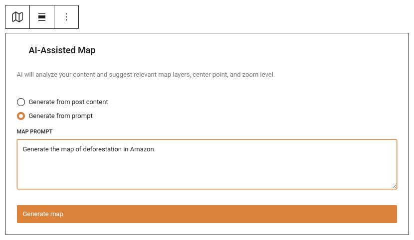
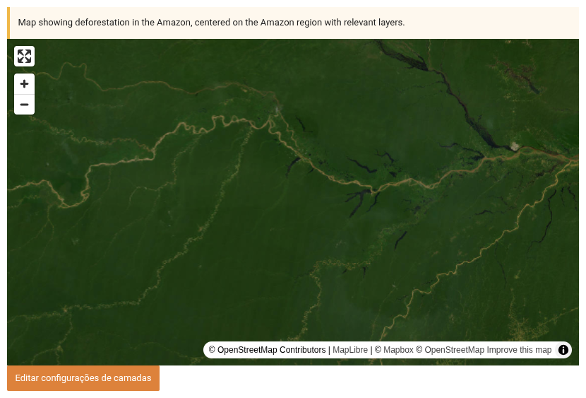
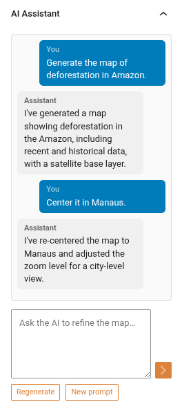

Minimap — AI-Assisted Map Block
The Minimap block (jeo/ai-minimap) generates contextual interactive maps inside the Gutenberg editor using AI. Describe what you need in natural language, and the AI builds a map with appropriate layers, center point, zoom level, and geolocation pins.
Inserting the block
- In the Gutenberg editor, click the + button to add a new block.
- Search for JEO AI Minimap and select it.
- The block starts in idle state with two generation modes:
- From post content: Automatically generates a map based on the current post's content and geolocation points.
- From prompt: Describe the map you want in a text field.

Generating a map
From post content
Click Generate from content. The system searches your existing layers and post geolocation data to build a contextual map. No AI prompt is needed — it uses RAG (Retrieval-Augmented Generation) to find relevant layers automatically.
From prompt
Type a description of the map you want (e.g., "A map of the Amazon region showing deforestation data and rivers") and click Generate. The AI agent will:
- Analyze your prompt and the current post content.
- Search for relevant existing layers in your Knowledge Base.
- Geocode relevant locations.
- Return a complete map with layers, center, zoom, and pins.

Chat refinement
Once a map is generated, the block enters ready state. An Inspector Panel opens in the Gutenberg sidebar where you can refine the map through chat:
- Text messages: Type instructions like "Zoom in on São Paulo" or "Remove the water layer".
- Regenerate: Start fresh with a completely new map suggestion.
- New prompt: Enter a new description to generate a different map (keeps the conversation context).
- Base layer variant: Switch between dark, light, and satellite base layers.
The AI remembers your conversation, so each refinement builds on the previous context.

AI-generated layers (Minilayer)
If you have a Mapbox API key configured, the AI can generate custom map layers when existing layers don't cover what you need. During chat, ask the AI to create a layer (e.g., "Can you generate a deforestation heatmap for the Amazon?"). The AI will ask for your confirmation before generating — it never creates layers without explicit approval. The new layer is added to the map automatically with AI-suggested styling (colors and filters) that you can later override in the layer settings modal via the "Use AI Default Style" checkbox.
Map features
After generation, the minimap behaves like any JEO map:
- Pan and zoom: Drag to pan, scroll to zoom.
- Layers: Thematic layers with legends.
- Pins: Geolocation pins from the post's geolocation data.
- Base layer: Automatically chosen (dark/light) based on layer colors, or manually selected.
Requirements
- An AI provider must be configured in Jeo → AI (see AI Settings).
- For best results, index your posts and layers in the Knowledge Base (RAG tab).
- For AI-generated layers, a Mapbox API key is also required.